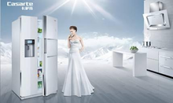

卡萨帝进入卡萨帝网站

Casarte卡萨帝品牌介绍
Casarte卡萨帝，是源自意式生活灵感的国际高端家电品牌，以艺术家电和嵌入一体化橱电为核心产品线。
Casarte卡萨帝的名字的灵感源于意大利语，“La casa”意为“家”，“arte”意为“艺术”，两者合二为一就是Casarte，意为“家的艺术”。
卡萨帝在全球拥有14个设计中心、28个合作研发机构（如麻省理工等），有着由许多在业界享有盛名的设计师所带领的跨越多个国家的300多位设计师团队（意大利、英国、德国、法国、美国、日本、中国等12个国家）。融聚了全球设计和创新精华，材质选择以不锈钢和玻璃为主的“永恒材质”，先后获得“IF设计大奖”、“红点奖”、“Plus X大奖”等全球工业设计顶级奖项。
卡萨帝旗下已拥有冰箱、酒柜、空调、洗衣机、热水器、厨房电器（抽油烟机、灶具、消毒柜、烤箱、蒸炉、微波炉、洗碗机等）、生活小家电（咖啡机、面包机、榨汁机、搅拌机、柳橙机、暖杯碟机、电水煲等）、电视机以及整体橱柜等9大品类、39大系列、380余个型号的产品。目前已进入近百万个高端家庭。
秉持“创艺家电，格调生活”的品牌理念，卡萨帝在“汲取精致生活的灵感，缔造永恒的艺术品质”的核心品牌设计语言下，每一件产品都诠释着家电生活艺术化的趋势，致力于为都市精英人群打造优雅精致的格调生活
艺术家电
卡萨帝是在引领家电功能性趋势的基础上，突出产品工业设计的一种创意性家电。艺术家电，强调艺术感的设计和设计的艺术化。艺术家电的产生，将使家电成为家居环境中的艺术品，带给消费者感官和心灵上的审美体验， 享受独特工业设计所带来的随心自由与便捷。艺术家电强调以用户为中心的设计，致力于以技术革新和工业设计为支撑的品质与品味、性能与功能的完美融合。此外，艺术家电要求制造材料、制造工艺等各个环节完全服务于设计品质的要求，从而要求厂商对消费者进行全方位的人性化关怀。嵌入一体化橱电：是将家电和橱柜进行完美的结合，是从设计、制造、安装、服务一体化的解决方案。嵌入一体化橱电的普及，将使家电在家庭内将不再是作为单独烹饪和清洗的中心，而是逐步成为厨房和家居中心的延续；现代的家电将不再作为单独的角色，而是成为厨房整体的一部分，家电的功能、设计和安装会完美融合到整个厨房设计概念中。
品牌理念
卡萨帝产品，因其富含人文理念和人文关怀设计，传递着与生俱来的自信，传递着其希望与任何一个以追求高品质生活为信念、并对生活充满热情的人们进行沟通的愿景，并渗透出卡萨帝提倡格调生活、至臻优雅的生活态度。何为优雅？卡萨帝相信，拥有时尚的产品外观设计为视觉的“优雅”、精致细腻的内部功能为感受的“优雅”。优雅，绝非是冷艳的、有距离的；卡萨帝以一种高贵且温和、极致却内敛的姿态，由内而外、由产品到理念去传递优雅、从容的“卡萨帝式”的生活。
意式三门
卡萨帝深厚的品牌文化底蕴绝不是一日而就，支持在它背后的是海尔30年的市场积淀和海尔全球的资源。作为全球最大的白色家电品牌，海尔从品牌创立至今，凭借对消费者需求的深厚了解及丰富的产品线，成就了其在全球家电行业的领先地位。在“为全球消费者提供美好住居生活解决方案”这一品牌愿景的推动下，海尔对全球消费者的生活状态保持着持续的跟踪和研究。在推出Casarte品牌之前，海尔集团历时5年，对全球包括米兰、伦敦、柏林、巴黎、纽约、东京、上海等12个城市的8万余名高端用户进行了详尽、深度的消费调查研究。调查结果显示，高端消费者正在高速发展成为独特的阶层。以中国为例，高端人群每年以16%的速度递增，80%在25-45岁之间，主要生活在一类和二类城市中；他们事业成功，文化程度较高，多数大学或大学以上学历；他们受国外思潮影响较大，对时尚、现代、西化的生活方式有较高认同，认为财富的意义从炫耀内化为有能力选择自己喜欢的生活方式，普遍追求更有品质的精致生活（关注健康、和谐、优雅、方便、高科技、装饰性）。高端消费者的生活价值观正在发生着深刻变革，消费者的需求也从普众需求发展到个性化的需求。在产品功能层面，高端人士普遍注重产品的技术创新，关注品牌的声誉，关心设计，关注产品的健康环保，关心产品的制造工艺和精细化程度；
在追求产品品质和功能的同时，他们希望品牌和产品可以代表其生活方式、表达其对生活的理解、并为其生活带来高品位的全新理念。秉承对消费者需求的理解以及世界顶尖设计及创新的支持，海尔为卡萨帝这一可以代表高端群体品质生活的品牌赋予了生命。
作为海尔集团的高端子品牌，卡萨帝与海尔的品牌运营模式为强背书模式。卡萨帝享有海尔全球设计、研发、制造及采购等众多国际资源，并借力海尔于全球建立的29个制造基地、8个综合研发中心、19个海外贸易公司及总数超过6万人的全球员工。
主要产品
从2007年9月上市至今，以艺术家电和嵌入一体化橱电为主要产品线的卡萨帝，旗下已经拥有了冰箱、酒柜、空调、洗衣机、热水器、电视、厨房电器（抽油烟机、灶具、消毒柜 、烤箱、蒸炉、微波炉、洗碗机等）、生活小家电（咖啡机、面包机、榨汁机、搅拌机、柳橙机、暖杯碟机、电水煲等）以及整体橱柜等9大品类、39大系列、380余个型号的产品。在过去的三年中，卡萨帝发展迅速、成绩凸显，凭借其出色的设计创意频频摘得国际大奖，包括美国《商业周刊》的“年度设计奖”、德国的“Plus X大奖”、德国的“IF设计大奖”及德国的“红点至尊奖”等设计大奖等。
在2009年12月份的IPSOS品牌资产调查报告中显示，卡萨帝在中国一线城市高端人群中的品牌提及率已经达到了29%。目前，卡萨帝产品已经自豪地进入中国近百万个高端家庭，为中国的高端人群带去了品质生活。
卡萨帝不仅仅是一个高端家电品牌，更代表着一种生活方式和态度，卡萨帝相信本着至臻优雅、源自创新的设计与理念，卡萨帝将继续致力于满足精英人群享受极“质”的潜在需求，并超前提供应对未来趋势的优雅生活解决方案。
发展大事记
2006年卡萨帝产品研发阶段，首批产品设计荣获了由中国创新设计红星奖委员会颁发的“中国创新设计红星奖”的最高荣誉 “至尊金奖”。
2007年9月20日 卡萨帝品牌在于北京举行的“现在，进入未来―Casarte生活品鉴会”上正式发布。 2007年卡萨帝洗衣机荣获德国汉诺威工业论坛设计中心颁发的具有“设计届奥斯卡”之称的“iF设计大奖”（iF Design Award）。
2008年3月，卡萨帝意式三门冰箱获得了 “红点至尊奖”（Red Dot）。这是中国冰箱业首次夺得该项大奖。5月，卡萨帝法式对开门冰箱成为家电行业唯一获得第24届美国“金锤奖” （Golden Hammer Award）的品牌。9月，卡萨帝意式三门冰箱荣获美国《商业周刊》（Business Week）与美国工业设计师协会(IDSA)共同评选的2008年 “国际杰出设计奖”。
2009年5月 世界权威创意经济研究机构——ICEC (世界创意经济研究中心)公布了2008年度影响世界的十大创意产品名单，卡萨帝法式对开门冰箱凭借“超级空间”成为唯一入选的冰箱品牌。“2009中国高端冰箱流行趋势暨行业发展高峰论坛”上，卡萨帝意式三门冰箱获得了“2008-2009年度最值得购买三门冰箱”奖、卡萨帝法式对开门冰箱被授予 “2008-2009年度经典对开门冰箱”等5项大奖。
2009年9月6日 在德国2009 IFA展会上，卡萨帝法式对开门冰箱荣获“2009年度最佳技术创新奖”，该活动由中国家用电器研究院联合中国工业设计协会共同举办。
2009年9月29日卡萨帝复式滚筒洗衣机在北京召开产品上市发布会，向全球展示了其独创的“S-e复式平衡环技术”。
2010年3月26日 卡萨帝在上海召开“嵌入时尚，IN 领潮流”2010卡萨帝格调生活全球品鉴会。
2010年6月28日 卡萨帝在上海世博园意大利馆举行了《格调生活白皮书》发布仪式，卡萨帝广邀艺术、设计、美食美酒界精英从红色热情、白色创意、绿色优雅三方面精准诠释了格调生活的真正含义，为中国高端人群追求高品质生活做出了指引。
2010年9月16日 卡萨帝携手马艳丽、李东田、闫月、金宇红、萧慈睿、吴迪等来自服装、造型、音乐、室内设计、生活心理不同领域的知名“生活艺术家”共同举办的“意·格调”生活艺术家沙龙暨卡萨帝创艺设计概念展，分享对“生活和艺术”的感悟，探讨“家的艺术”的本真。
2010年10月13日 卡萨帝携旗下冰箱、酒柜、生活家电等核心产品参加在上海展览中心举行的2010年国际时尚家居展，与众多国际顶级家电品牌同台亮相。 2010年11月5日 由《IT经理世界》 举办的“创新十年——新技术，新经济，新十年”评选颁奖典礼暨2010经理世界年会在北京举行。会上，卡萨帝物联网冰箱荣膺“未来十年创新产品领袖奖”。
2010年12月8日 由《数字商业时代》和中国社会科学院工业经济研究所共同主办的“智造·十年——寻找影响中国的商业新势力”2010年度大型论坛暨颁奖盛典活动在北京举行。会上，卡萨帝冰箱荣膺“十年新锐产品奖”。2011年1月 卡萨帝法式六门冰箱，以其颠覆性的设计与高科技的完美结合，在第二届家电“红顶奖”颁奖盛宴上摘得2010-2011年度冰箱类唯一“红顶奖”。
2011年卡萨帝“真实触·动，格调家宴”年度系列主题公关活动通过 “味”、“嗅”、“触”、“视”、“听”五种不同感官体验心灵的触动。
2011年4月18日 卡萨帝在北京竞园艺术中心签约中国杯世界花样滑冰大奖赛暨卡萨帝冰童选拔赛，卡萨帝与花滑的完美结合，巧妙地将家电的艺术设计理念与优雅内涵通过体育展示于众。 2011年4月15日 荣获iF国际设计大赛金奖的卡萨帝云PAD正式发布。
2011年5月25日 在2011上海厨卫展上，卡萨帝展示了全球首个获得iF大奖的成套系列家电产品——卡萨帝铂晶系列家电。
2011年5月25日 由国家信息中心信息资源开发部和中国家电网联合举办、国美电器协办的“2011年中国冰箱行业高峰论坛”暨“我的绿色计划-国美电器冰雪节启动仪式”在北京拉开帷幕。据悉，这是国家信息中心举办的第三届高峰论坛，被誉为行业风向标。卡萨帝品牌被评为“2010-2011年度冰箱行业高端至尊品牌”，同时其卡萨帝法式六门冰箱、意式三门冰箱和法式对开门冰箱分别获得了 “2010-2011年度冰箱行业经典之星”的荣誉。 2011年7月 中国国际消费电子博览会期间，卡萨帝系列产品荣获了“入世十年 影响世界的全球消费电子创新产品”奖。
2011年9月2日 由国家信息中心信息资源开发部联合中国家电网举办的“2011中国洗衣机行业高峰论坛”在北京举行，卡萨帝荣获2011年度全球洗衣机高端领导品牌；卡萨帝复式滚筒荣获2011年度高端滚筒创新引领产品奖。
2011年9月3日 德国柏林国际消费类电子IFA展上，卡萨帝云PAD荣获“用户体验金奖”，成为本届IFA展上的赢家。同时卡萨帝电热水器在IFA展进行的“2011年度中国家用电器创新奖评选”活动中，获得由中国家用电器研究院颁发的“产品创新奖”。[1]
2011年12月7日 卡萨帝获得由《地产》杂志颁布的“地产部品行业最具影响力品牌”，同时获得“地产行业最佳供应商”称号。
2013年1月17日，由中国家电网举办的第四届“红顶奖”颁奖盛典召开。海尔集团高端品牌卡萨帝博芬系列物联网双温区酒柜，凭借颠覆传统的研发理念和双温区创新设计，获得专家评审团的一致认可，荣获“红顶奖”，成为酒柜类产品唯一获此殊荣的品牌。
进入卡萨帝网站